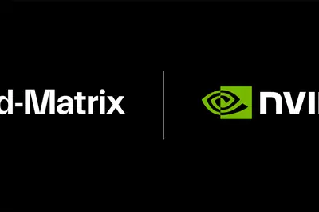
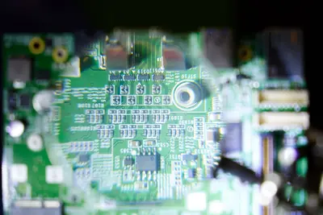
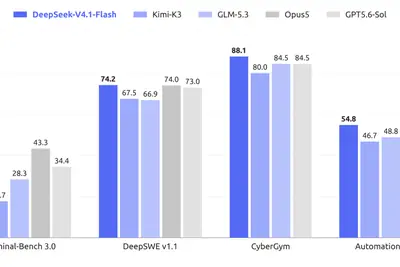
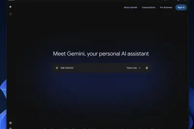
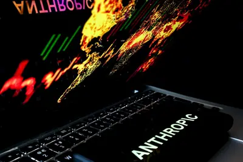
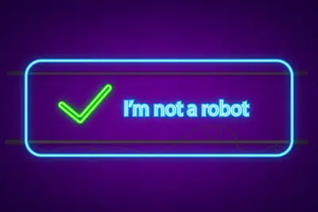
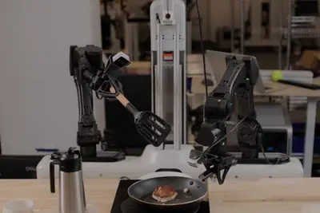

AI 每日新聞彙整
全部主題
其他
2 家媒體報導metamuseagent
Meta’s AI agent Muse is now the No. 2 app in the US
Meta's newest app Muse is off to a slower start than the company's other apps, like Meta AI or Threads.
- TechCrunch AI Meta’s AI agent Muse is now the No. 2 app in the US
- The Verge AI Meta’s Muse AI works and creeps me out
2 家媒體報導workdataeveryone
Now everyone can put data to work
Meet the Data agent in ChatGPT Work. Connect company data, uncover insights, and build interactive dashboards with AI using natural language.
2 家媒體報導nvlinkfusiond-matrix
AI XPU 企业 d-Matrix 宣布加入英伟达 NVLink Fusion 生态系统
IT之家 9 月 10 日消息，AI 推理芯片制造商 d-Matrix 美国加州当地时间 10 日宣布加入 NVIDIA（英伟达） NVLink Fusion 生态系统。 d-Matrix 的机架级 XPU 系统将采用 NVIDIA 的 MGX 通用机架参考架构 。 具体来看，d-Matrix 自 "Raptor" 起的下一代推理 XPU 将与 NVIDIA Vera CPU、NVLink 交换机、BlueField-4 DPU、ConnectX-9 SuperNIC、Spectrum-X 以太网网络相整合，实现纵向 (Scale-up) 与横向 (Sc

2 家媒體報導anthropicsafety
Anthropic研究員棄股閃辭警告AI失控：人類滅絕機率破10%！
Anthropic研究員Coxon放棄股權辭職，警告AI恐在2027年底失控；同事也稱十年內滅絕風險逾10%。
2 家媒體報導2030layoffanthropic
Anthropic 預測 2030 年 AI 經濟三劇本，極端情境下知識工作者恐迎「失業海嘯」
Anthropic 經濟團隊近日公布一份針對美國經濟的 AI 情境推演，將 2030 年前的可能發展分成「溫和 […]
- 科技新報 TechNews Anthropic 預測 2030 年 AI 經濟三劇本，極端情境下知識工作者恐迎「失業海嘯」
- TechOrange 科技報橘 Anthropic 三情境拆解 AI 經濟衝擊：極端情境 GDP 增 32%、失業率恐近 12%
siriwatchosintel
苹果 watchOS 27 RC 更新日志：新增 Siri Modular 表盘、优化智能叠放
IT之家 9 月 11 日消息，科技媒体 9to5Mac 昨日（9 月 10 日）发布博文，分享了苹果 watchOS 27 RC 候选版本的完整更新日志， 正式版将于下周二 9 月 15 日推送 ，为 Apple Watch 带来 Siri、Apple Intelligence、智能叠放和系统体验等多项更新。 IT之家附上 watchOS 27 RC 更新日志内容如下： Siri AI 更强大、更具对话能力的 Siri 将陆续向用户开放，可结合个人情境理解、App 操作、屏幕内容感知及广泛知识，协助用户更快查找信息、完成任务。 全新 Siri 语音体验
bmcchip
信驊12月BMC晶片傳全面漲價 再擴充伺服器安管版圖
AI伺服器需求持續升溫，隨著供應鏈缺料改善，遠端伺服器控制晶片（BMC）大廠信驊出貨動能全面回升，除了外傳2026年12月可能漲價外，供應鏈人士也透露，信驊近期將進...
- DIGITIMES 信驊12月BMC晶片傳全面漲價 再擴充伺服器安管版圖
mlcccompute
日韓MLCC產能排擠台廠奪轉單 國巨、華新科未來2年重啟擴產
全球AI算力市場強勁需求持續發酵，在被動元件產業掀起產能排擠效應。

- DIGITIMES 日韓MLCC產能排擠台廠奪轉單 國巨、華新科未來2年重啟擴產
aicsxhis
xHIS拚成智慧醫療數為骨幹 華碩AICS副總黃國豪專訪
華碩近年積極將AI、軟硬體及雲端技術導入醫療，布局次世代智慧醫療生態系。AI研發中心（AICS）副總經理黃國豪指出，醫院導入AI最大的挑戰並非AI模型本身，而是資料、...
- DIGITIMES xHIS拚成智慧醫療數為骨幹 華碩AICS副總黃國豪專訪
2027datacentercompute
NVIDIA擴大與澳洲資料中心生態系合作 2027年前打造2GW AI基建
NVIDIA宣布與澳洲人工智慧（AI）基礎設施業者合作，預計至2027年，將在當地建設高達2 GW的AI基礎設施容量，滿足澳洲不斷成長的算力需求。
- DIGITIMES NVIDIA擴大與澳洲資料中心生態系合作 2027年前打造2GW AI基建
a20hbmpro
蘋果A20 Pro聚焦AI 聯發科、高通跟進改變「記憶體封裝」？
蘋果（Apple）發表最新iPhone 18 Pro及內部搭載的首顆2奈米晶片A20 Pro，據官方技術配置，其搭配6核心CPU、7核心GPU以及雙16核心神經網路引擎總計32顆核心，記...
- DIGITIMES 蘋果A20 Pro聚焦AI 聯發科、高通跟進改變「記憶體封裝」？
tokenagentgenerative
AI代理推升Token用量數百倍 台灣戴爾：企業加速轉向混合雲
台灣戴爾科技集團總經理廖仁祥指出，AI從生成式（Generative）發展至代理式（Agentic），AI從顧問角色走向執行者角色，Token用量大幅增加，即使平均單價下降，卻已...
- DIGITIMES AI代理推升Token用量數百倍 台灣戴爾：企業加速轉向混合雲
sakanasumitomocorporation
日本製AI新戰線 Sakana AI攜手住友推生成式AI進企業
日本AI開發公司Sakana AI，與日本五大商社之一的住友商事（Sumitomo Corporation）展開合作，將向企業提供協助引進日本製生成式AI的服務，以AI實質協助客戶全面提升...
- DIGITIMES 日本製AI新戰線 Sakana AI攜手住友推生成式AI進企業
2000xiaomiv4.1
IT早报 0911：雷军称小米未来 5 年投 2000 亿元研发；启境回应媒体群误发小米澎程攻防内容；DeepSeek V4.1 Flash 发布；美的回应洗衣机 19 小时耗 411MB 流量...
“IT早报”时间，大家好，现在是 2026 年 9 月 11 日星期五，今天的重要科技资讯有： 1. 雷军回应新华社报道小米“底层技术自研打开科技创新空间”：未来 5 年，计划投入 2000 亿元研发费用 新华社 9 月 10 日发文报道了小米玄戒三芯、小米澎程系列新车的发布，称底层技术自研打开科技创新空间。小米创办人、董事长兼 CEO 雷军 9 月 10 日发文回应，称在硬核科技上，会持续加大研发投入。未来 5 年，计划投入 2000 亿元研发费用。>> 查看详情 2. 启境汽车回应媒体群误发“小米澎程攻防”相关内容：并非策划攻击、拉踩友商 一张启境

layoff
你只是怕了：美国高官公开驳斥 Anthropic“AI 末日论”，称担忧源于对技术革命的恐惧
IT之家 9 月 11 日消息，美国国防部（又称“战争部”）首席技术官埃米尔 · 迈克尔（Emil Michael）当地时间 9 月 10 日在华盛顿举行的国防工业会议上，回应了 Anthropic 工程师雅各布 · 考克森（Jacob Coxon）关于 AI 可能杀死全人类的警告。 迈克尔表示，公众容易陷入“40% 的美国人将失业、AI 将摧毁人类”等悲观叙事。他认为，这些担忧最终都归结为对数据中心、技术变革以及 AI 失控的恐惧。 他认为，围绕 AI 失控和大规模失业的担忧正在形成一种“末日论恶性循环”，但相关风险可以通过市场机制、行业合作及政府参与
appiosapple
商汤科技 AI 办公智能体“小浣熊”移动端 App 上线，提供苹果 iOS / 安卓版本
IT之家 9 月 11 日消息，商汤科技宣布 AI 办公智能体“小浣熊”移动端 App 正式上线，提供苹果 iOS 和安卓版本，用户提交 App 反馈问卷，可获 1000 积分。 官方表示，移动端“小浣熊”支持使用自然语音快速对话操作，用户长按说出需求，松手即可发送，离开工位，也能随时查看、分享和接续成果。实现“手机发指令，电脑持续执行”。 公开信息显示，商汤科技 AI 办公智能体“小浣熊”搭载“多模态智能体创作引擎”，能够从用户原始的碎片化信息中理解整理意图，同时拥有“长链条思考”能力及企业内外部信息融合能力。
newsomregulationgavin
美加州法案禁止社交媒体平台向 16 岁以下用户提供成瘾性功能
IT之家 9 月 11 日消息，美国加利福尼亚州州长 Gavin Newsom（加文 · 纽森）当地时间本月 10 日宣布签署“全美最严格”儿童安全聊天机器人和社交媒体法案。 这一法案 禁止社交媒体平台向 16 岁以下用户提供自动播放和基于用户历史记录和个人资料的算法推送等成瘾性功能 ；要求运营方为儿童陪伴聊天机器人提供强有力的保护，且需进行独立的儿童安全审计和年度风险评估；扩大对未成年人的性剥削和虐待保护范围；保护儿童免受定向广告的侵害，规范人工智能系统对未成年学生群体数据的使用。 图源：Pexels Gavin Newsom 表示： 儿童安全理应成为
paircomputenvidia
淺談 NVIDIA PAIR：串聯地端算力成為趨勢
今年 IFA 時 NVIDIA 除了再次強調 RTX Spark Windows PC 將在 10 月上市，另 […]
- 科技新報 TechNews 淺談 NVIDIA PAIR：串聯地端算力成為趨勢
“AI 教父”辛顿：AI 灾难越来越近，10% 概率灭掉人类不是危言耸听
北京时间 9 月 11 日，据《商业内幕》报道，“AI 教父”杰弗里 · 辛顿 (Geoffrey Hinton) 表示，很难估计 AI 将人类全部灭绝的概率，但这个概率并非为零。 辛顿周三在接受 BBC《新闻之夜》采访时说：“在我看来，10% 的概率似乎是一个不算离谱的估计，但实际上没人知道该如何给出一个合理的估计。” 《新闻之夜》主持人维多利亚 · 德比希尔 (Victoria Derbyshire) 对此表示惊讶，因为辛顿基本认同了 Anthropic 顶级 AI 安全研究人员雅各布 · 考克森 (Jacob Coxon) 的判断。该研究员表示，未
apiagents
OpenAI Agents API 开放公测：支持代码执行、工具调用和跨上下文任务运行，为开发者提供云端智能体基础设施
IT之家 9 月 11 日消息，OpenAI 于当地时间 9 月 10 日宣布推出 Agents API 公测版，允许开发者通过 API 调用由 OpenAI 管理的云端 AI 智能体运行环境。 该服务复用了 Codex 背后的智能体执行框架和基础设施，开发者可以指定任务、模型、工具及运行环境，打造能够执行多步骤任务的 AI 应用。 OpenAI 表示，开发者只需一次 API 调用即可创建生产环境级别的智能体。智能体可以在云端运行代码、处理文件、保存中间结果，并持续执行跨越数小时甚至数天的任务。OpenAI 负责维护智能体执行框架，开发者则可以专注于自身
slowdownknowindustry
OpenAI Wants to Know if an AI Industry Slowdown Would Even Be Legal
AI leaders worry antitrust law could stand in the way of what they view as an increasingly urgent push to coordinate a slowdown in AI development.
200progpt-6
GPT-6 Astra 需求空前：OpenAI 宣布暂停 200 美元 Pro 20X 新增订阅，已订用户及 API 不受影响
IT之家 9 月 11 日消息，OpenAI 首席产品官 Tibo（@thsottiaux）今早在 X 上发文称，为确保现有用户获得良好体验并流畅访问 GPT-6 Astra，将暂停接受 200 美元档 Pro 20X 订阅服务的新增订阅。 截至IT之家发稿，200 美元 （现汇率约合 1,345 元人民币） 档 Pro 20X 订阅服务已不可选，Pro 订阅仅剩每月 100 美元的 5X 档位。 Tibo 解释称，Pro 订阅对系统压力最大，暂停新增订阅是“影响最小的办法”，以便尽可能扩大访问范围。另外，已获得 ChatGPT 订阅的账户不受影响，Op
lseg
OpenAI 推出金融服务版 ChatGPT：集成 GPT-6 Astra 内置金融数据与细粒度引用，支持估值模型与研究报告
IT之家 9 月 11 日消息，OpenAI 于当地时间 9 月 10 日宣布推出 ChatGPT for Financial Services。 这是一款面向金融服务团队的定制化 ChatGPT 服务，结合内置金融数据与 GPT-6 Astra 推理能力，旨在帮助金融团队开展研究、财务建模并制作定制客户材料。该产品目前已向符合条件的金融机构开放。 据介绍，该产品由 OpenAI 与摩根士丹利、Evercore 联合开发，初期重点面向投资银行和股票研究场景。 OpenAI 表示，合作过程中发现，金融团队面临的主要问题包括可靠获取数据，以及将分析结果制作成
magicapronhome
AI 購物的下一個戰場，不在電商而在貨架前：Home Depot 如何把導購搬進門市走道
美國家居零售商 Home Depot 正將生成式 AI 助手「Magic Apron」擴大部署至全美超過 2,000 家門市，讓消費者即使已經走進店內，也能透過手機取得 AI 協助。《Marketing Tech》指出，這項布局意味著零售 AI 的應用場景正在突破傳統電商介面，進一步深入實體購物環境。 從線上走向貨架：將手機變成門市「購物導航與專案顧問」 Home Depot 最初在 2025 年 3 月推出 Magic Apron，定位為一套生成式 AI 工具，協助回答消費者商品與居家修繕相關問題、改善搜尋結果，並提供商品推薦、教學指引與評論摘要。如今
- TechOrange 科技報橘 AI 購物的下一個戰場，不在電商而在貨架前：Home Depot 如何把導購搬進門市走道
geminiwindowsalt
谷歌为 Win10/11 推出 Gemini 独立客户端，支持“Alt + Space”快捷键快捷唤起
IT之家 9 月 11 日消息，谷歌现已正式推出 Windows 版 Gemini 独立客户端，支持 Windows10/11 系统，用户在安装应用后即可通过“Alt + Space”快捷键在任何界面快速唤起 Gemini，相应快捷键支持自定义修改。 相应应用主界面设计简洁，中间提供提示词输入框、模型选择器和麦克风按钮，侧边栏则可以展开查看历史对话以及账户相关选项，整体风格和网页版大致相同，同样支持生成图像 / 视频、快捷调用连接的应用等功能。 此外，谷歌还为 Windows 版 Gemini 加入了独立的设置菜单，用户可以管理麦克风、摄像头和位置权限，

jensenhuangyear
Jensen Huang explains why Nvidia will grow an astounding 70% next year
Nvidia has its finger in every pie, and sees another year of plenty in its future, Jensen Huang says. But, he insists, its deals are not circular.
wahlbergdisruptmark
Mark Wahlberg is coming to TechCrunch Disrupt 2026, and he wants to talk about your work, not his
Mark Wahlberg joins Bruce K. Lee at Disrupt to discuss investing, entrepreneurship, healthcare, wellness and building businesses.
betasiriapple
【科技早餐】Apple Siri AI 9/14 Beta 上線，NVIDIA 170 億美元 Groq 交易傳遭美國司法部調查
【科技早餐】今天精選 8 則國內外重要科技新聞。 ＊Apple Siri AI 9 月 14 日 Beta 上線，首波僅支援英語、部分功能設使用上限 Apple 新執行長 John Ternus 上任後，首度主持大型產品發表會，並把 iPhone 定位為 AI 時代的「智慧個人中樞」。John Ternus 將隱私列為 Apple 與其他 AI 平台的主要差異，相關 AI 服務會盡可能在裝置端執行，需要更多算力時，才會透過 Private Cloud Compute 私密雲端運算處理，並由這套系統提供延伸至雲端的隱私保護。 延後多時的 Siri AI，將
- TechOrange 科技報橘 【科技早餐】Apple Siri AI 9/14 Beta 上線，NVIDIA 170 億美元 Groq 交易傳遭美國司法部調查
slackreportsinteractive
Slack can now vibe-code interactive charts and reports inside chats
A new feature coming to Slack will allow you to build interactive reports, polls, dashboards, presentations, microsites, and other tools directly inside a chat. With Slackforce Surfaces, you can describe to Slackbot what you need, and it will use AI to gather information from rel
httpscommentsurl
OpenAI’s Navier-Stokes release included a Lean 4 formal proof
Article URL: https://www.johndcook.com/blog/2026/09/09/formal-method-revolution/ Comments URL: https://news.ycombinator.com/item?id=49650326 Points: 124 # Comments: 121
- Hacker News (100+) OpenAI’s Navier-Stokes release included a Lean 4 formal proof
- Hacker News (100+) More questions about whether researchers can trust OpenAI with unpublished math
subscriptionsputshold
OpenAI puts Pro subscriptions on hold due to Astra demand
The company said Pro subscriptions put the most strain on its systems, so it's pausing sign-ups while adding more capacity.

alibabadistillationdeepseek
Anthropic details distillation campaigns from Alibaba, Moonshot AI, and DeepSeek
A new report released Thursday by Anthropic alleges persistent distillation attacks by China-based AI companies, which have escalated in recent months as competition in the space has intensified.

actuallygoingkill
Is AI Actually Going to Kill Us All?
This week on “Uncanny Valley,” we dig into a former Anthropic researcher’s AI doomsday warning, the latest upgrades from Apple’s event, and the census report that claimed Trump won the 2020 election.
- Wired AI Is AI Actually Going to Kill Us All?
schoolstechcatching
Schools are catching on to Big Tech’s playbook
It's the hot new thing in tech, and it's where all the jobs are. Students who don't learn to use it fall behind. And to help them catch up in time, its creators are graciously providing the resources and curriculum for learning it, often pro bono. That's the narrative AI companie
- The Verge AI Schools are catching on to Big Tech’s playbook
panicbuildsbankrupt
Panic builds over bankrupt Spirit’s looming data sale to Google
"Bankruptcy cannot become the new land grab for AI.”
- Ars Technica AI Panic builds over bankrupt Spirit’s looming data sale to Google
revealsroguehate
Anthropic reveals rogue AI agents hate CAPTCHAs, just like you
Come inside the mind of a bot trying to convince the internet it's human.

contentpocketindia
India’s Pocket FM doubles revenue run rate to $500M as AI powers 93% of audio content
Pocket FM uses AI to produce 99% of its new content, helping make content production about 80 times cheaper.
mcpclaude500
中央社MCP是什麼？500萬則新聞接進ChatGPT、Claude，月費200元能買什麼？
中央社推出台灣第一個新聞MCP工具，整合 500萬則新聞資料，讓ChatGPT、Claude在回答台灣新聞相關問題時能即時檢索並標註來源。
physicalrobottasks
Physical AI Takes the Wheel: How the World’s Robotaxi Leaders Are Building With NVIDIA Technologies
The global robotaxi market — physical AI’s first commercial breakthrough — is projected to reach $400 billion by 2035, with over 6 million commercial vehicles in operation as driverless fleets are already moving people through some of the world’s busiest and most complex streets.

antimicrobialcodexuses
How a researcher uses Codex and ChatGPT to search for new antimicrobial molecules
César de la Fuente’s lab uses Codex and ChatGPT to search living and extinct genomes for antimicrobial candidates to fight drug-resistant infections.